henry 发自 凹非寺
量子位 | 公众号 QbitAI
DeepSeek V4，已经开始逼着海外开发者为它修专属高速公路了。
发布才两周，开源圈里，第一批V4原生基础设施已经冒了出来。
而且，不是那种在现有框架上套一层壳的“小修小补”。
不是通用GGUF加载器；不是llama.cpp的wrapper；甚至压根不支持别的模型。
它只干一件事：
把DeepSeek V4 Flash，在Mac上跑到极致。
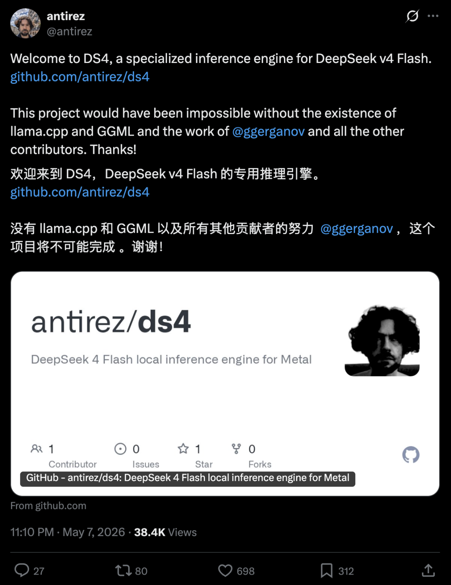
这条“专属高速公路”，叫ds4.c。而把修出来的人，分量有点吓人——
Salvatore Sanfilippo，程序员圈更熟悉他的另一个名字：antirez。
他一手创造了 Redis（GitHub 7.4 万 Star），并亲自主导这个全球最流行的内存数据库整整 11 年。
而现在，他的新项目ds4.c，是一个专门为DeepSeek V4 Flash打造的本地推理引擎。
时间线上，已经有网友在128GB Mac上把它跑了起来。
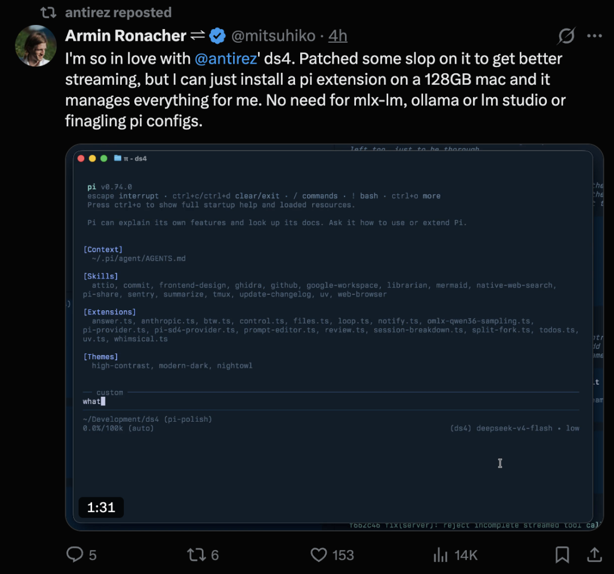
可以说，这波，Mac库存又被DeepSeek清了一遍。
鲸鱼，确实值得。
专为V4 Flash打造的本地推理引擎
4月24日，DeepSeek发布V4系列。其中，V4 Flash是效率型号：284B总参数、13B激活参数、100万token上下文。
这样的体量，过去几乎默认属于云端。
而antirez想做的，是把它塞进一台Mac。于是，ds4.c诞生了。
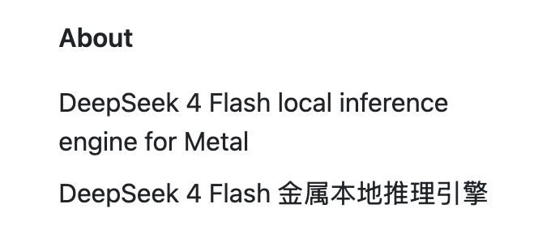
这是一个用C + Metal从头写出来的推理引擎。
整个项目就几个文件，C占55.4%，Objective-C 30.2%，Metal 13.8%。Metal-only，没有运行时，没有框架依赖，没有抽象层。
Metal-only。
Metal是苹果自家的图形和计算API，在Mac、iPhone、iPad上调用GPU都靠它，相当于苹果生态里的CUDA。
ds4只用Metal的意思是，这个引擎只在Apple Silicon上跑，不管Nvidia显卡，也不管AMD。
整个项目只有一个目标：
让V4 Flash在本地的苹果机器上，不只是“能跑”，而是真正“能用”。
目前测试结果已经相当夸张：
在128GB内存的MacBook Pro M3 Max上，2-bit量化、32K上下文，短prompt预填充58.52 token/s，生成26.68 token/s。
换成512GB的Mac Studio M3 Ultra，长prompt（11709 token）预填充能到468.03 token/s，生成27.39 token/s。
对一个284B参数的MoE模型来说，这个速度在本地机器上是可用的。
怎么做到的？
关键在三件事。
第一，非对称量化。
ds4并不会把所有参数都压到2-bit，而是只量化路由的MoE专家层，up/gate用IQ2_XXS，down用Q2_K，这些层占了模型空间的绝大部分。
其他组件，共享专家层、投影层、路由层，全部保留Q8精度不动。
antirez在README里写了一句很直接的话：
这些2-bit量化不是开玩笑，它们在coding agent下表现良好，能可靠地调用工具。
第二，KV缓存搬到硬盘上。
现在的LLM agent客户端都是无状态的，每次请求把整段对话重新发一遍。
通用引擎的做法是每次重新做prefill。
ds4的做法是把KV状态写到磁盘上，下次请求过来匹配token前缀，命中了就直接从磁盘加载，跳过prefill。
缓存的key是token ID序列的SHA1哈希值。
这对Claude Code这种每次启动会发25K token初始prompt的agent场景尤其有用，第一次prefill完成后，后续会话直接从磁盘恢复。
第三，内置OpenAI和Anthropic两套API兼容层。
/v1/chat/completions走OpenAI协议，/v1/messages走Anthropic协议。tool calling也做了适配。README里直接给了opencode、Pi、Claude Code三种agent客户端的配置示例。
关于为什么要做这件事。
antirez的回答是，本地推理领域有很多优秀项目，但新模型不断发布，注意力立刻被下一个要实现的模型吸走。
通用引擎为了兼容所有模型，必须做抽象。抽象意味着妥协。他想做的是一条刻意的窄路，一次只赌一个模型，用官方logits做验证，做长上下文测试，做足够的agent集成来确认它真的能用。
框架一经发布，就有网友不少网友反馈，已经在Mac上跑起来了。
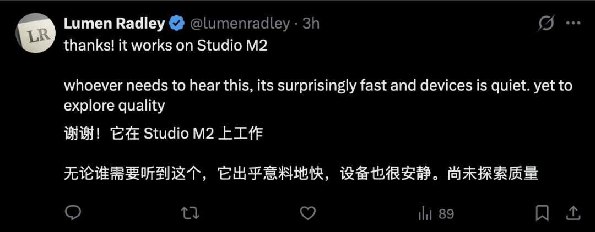 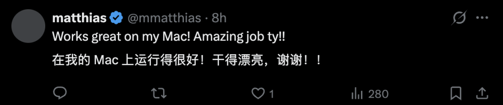
你准备好在本地跑V4了吗？
一个模型一个推理框架
这件事，也在开发者圈炸出了一个更大的讨论：
未来会不会变成——一个模型，一个推理框架？
Hacker News上一条高赞评论提了一个有意思的方向，如果开始针对精确的GPU加模型组合构建超优化推理引擎呢？
GPU越来越贵，如果去掉足够多的抽象层，直接针对精确的硬件和模型编码，可能能优化很多。
这条路的代价也很明显。同一条评论指出，一旦模型过时，一切从头来过。
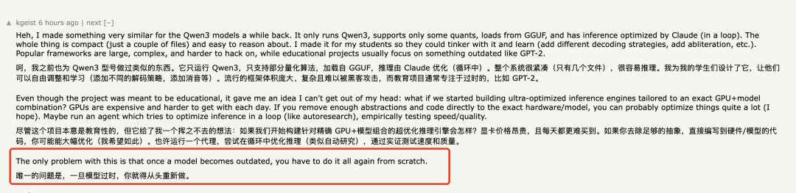
antirez自己也承认了这个问题。他说ds4当前赌的是DeepSeek V4 Flash，但模型可能会换。
不变的约束是，本地推理要在高端个人机器或Mac Studio上跑得靠谱，起步128GB内存。
未来会怎样，README里留了个伏笔。
当前是Metal-only，未来可能会做CUDA支持。但他写得很谨慎，也许会，但仅此而已。这个项目刻意保持小、快、专注。
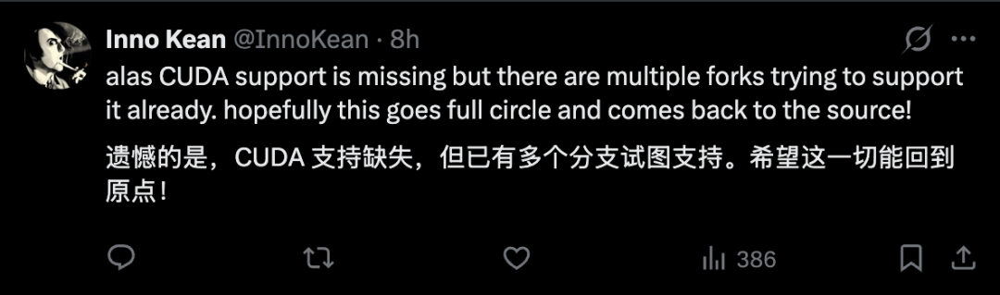
更值得关注的是他在README里抛出的一个观点，本地推理应该是三件事一起做好，开箱即用。
一个有HTTP API的推理引擎，一份针对这个引擎和这套假设特别打造的GGUF，一套和coding agent对接的测试和验证。
这是一种全栈本地推理的思路，不是把组件拼起来，是把链路当成一个产品来设计。
如果这条路走通了，它可能改变本地推理的玩法。
模型厂商发布新模型的同时，社区里就会有人跳出来给它做专属引擎，做专属量化，做专属agent接入。每一代模型都有一个自己的「antirez」。
ds4还有一个很坦率的细节。README里有一段声明，这个软件是在GPT 5.5的「强力辅助」下开发的，人类负责想法、测试和调试。
antirez说如果你不接受AI辅助开发的代码，这个软件不适合你。
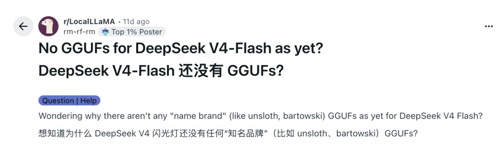
两周时间，从fork llama.cpp做适配，到从头写一个专用引擎，离不开AI辅助。这件事本身可能比ds4还更值得关注。
One more thing
最后说一下antirez这个人。
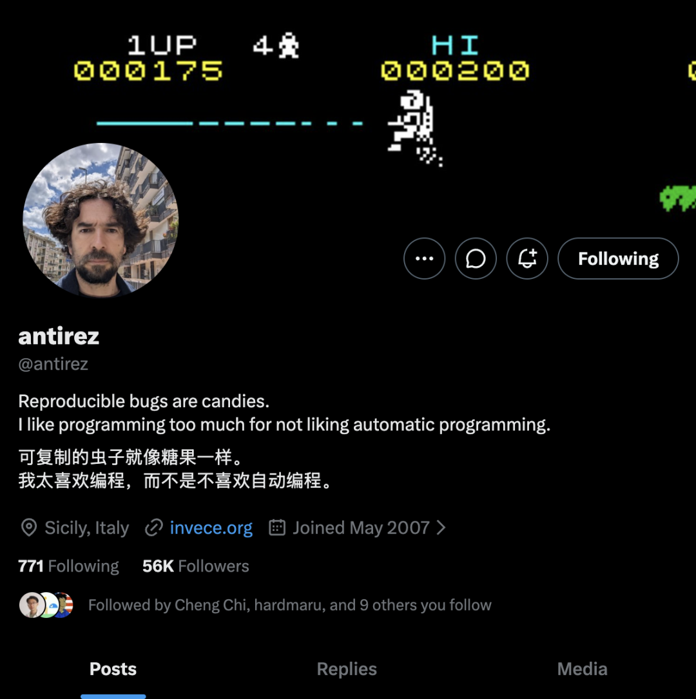
真名Salvatore Sanfilippo，1977年出生于西西里岛。2009年创建Redis，主导这个项目十一年，2020年离开。
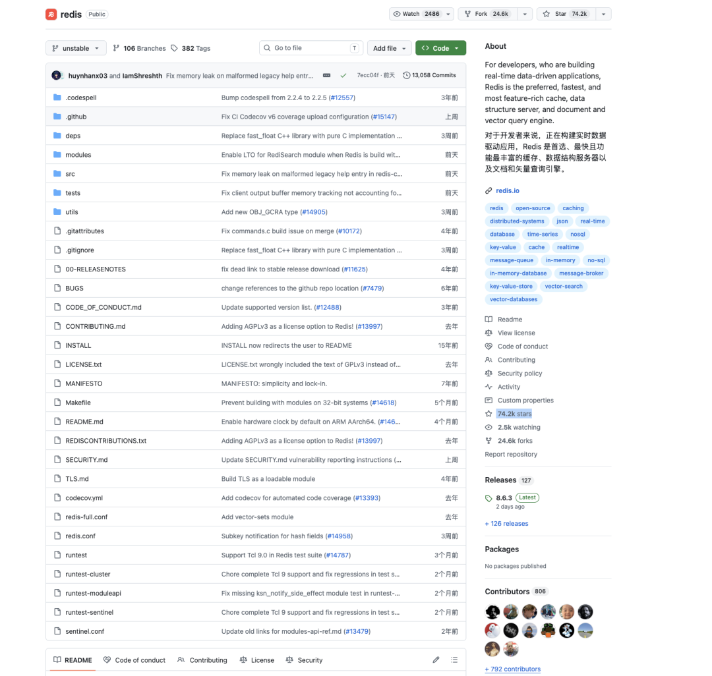
离开时他写过一段话，说自己写代码是为了表达自己，代码是一件制品而不只是有用的工具。他宁可被记住为一个糟糕的艺术家，也不愿被记住为一个好程序员。
2024年底他回到Redis，担任evangelist角色。
除了Redis之外，他还写过Kilo（不到1000行C代码的文本编辑器）、dump1090（航空ADS-B信号解码器）、linenoise（readline的微型替代品）。
他还在玩Flipper Zero，写了RF协议分析工具，把Asteroids移植到上面。2022年他出了一本科幻小说《WOHPE》，主题是AI、气候变化、程序员，以及人类和技术的互动。
他个人主页第一行写的是，「我把大部分专业时间花在写代码和写小说上。」
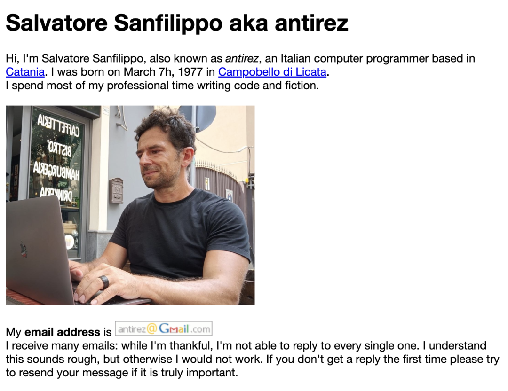
关于Redis的诞生，他在个人主页里写了一段：
我老婆说，Redis的前几年我大部分代码都是坐在马桶上写的，用一台MacBook Air 11寸。我真希望能说她错了，但她正好说得完全对。
这种调性贯穿了他做的所有项目。小、精确、自成一体。
ds4.c也是同一个路子。
看一下他在ds4 README里关于macOS bug的那段备注，能立刻感觉到这个人的味道。
ds4有一个CPU推理路径用于正确性验证，但当前版本的macOS在虚拟内存实现上有一个bug，跑CPU推理会导致内核崩溃。
他写道，记住了吗？软件都很烂。我没法修复CPU推理来避免崩溃，因为每次都得重启电脑，一点都不好玩。
然后加了一句，如果你有胆量，来帮我们。
他在个人主页里还留了一句话：
现代编程正变得复杂、无趣，全是要粘合的层。它正失去大部分美感。大多数程序员既不在面对编程的艺术面，也不在面对编程的高级工程面。
从Redis到ds4.c，十五年过去，antirez还是那个antirez。
只不过这一次，他开始给AI修路了。
参考链接
[1]http://invece.org/
[2]https://github.com/antirez/ds4
[3]https://news.ycombinator.com/item?id=48050751
一键三连「点赞」「转发」「小心心」
欢迎在评论区留下你的想法！
— 完 —
5月20日，我们将在北京金茂万丽酒店举办一年一度的中国AIGC产业峰会。
首波嘉宾阵容已公布！昆仑万维方汉、智谱吴玮杰、EverMind邓亚峰、风行在线易正朝、百度秒哒朱广翔、Fusion Fund张璐、香港大学黄超、MarsWave冯雷都来了，🔍了解详情
请你和我们一起，不再只是讨论AI的未来，而是现在就用起来。👉 报名参会

一键关注 👇 点亮星标